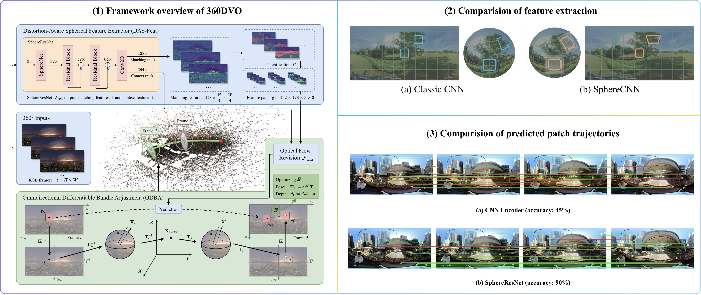
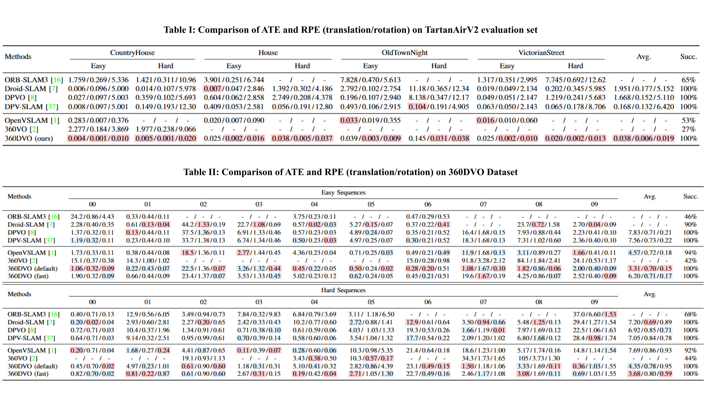
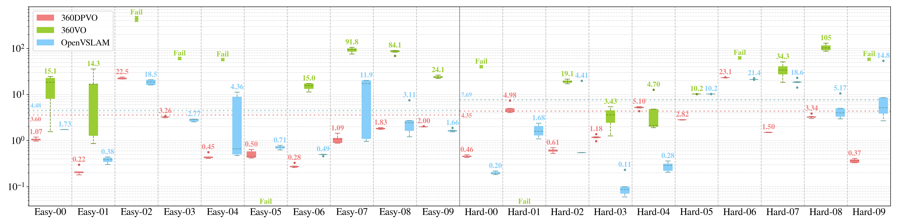
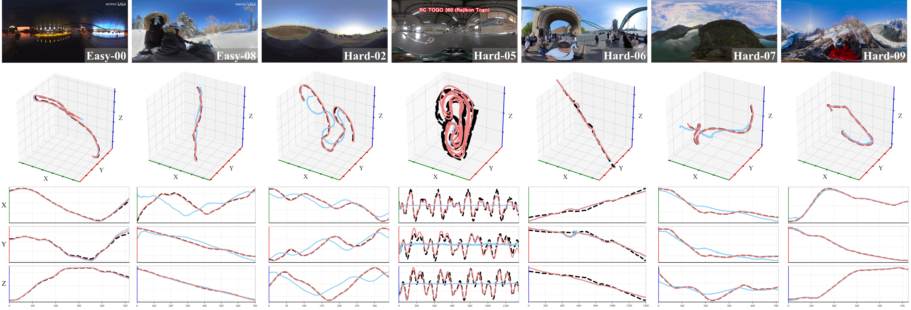

360DVO: Deep Visual Odometry for Monocular 360-Degree Camera
Abstract
In this paper, we present 360DVO, the first deep learning-based OVO framework. Our approach introduces a distortion-aware spherical feature extractor (DAS-Feat) that adaptively learns distortion-resistant features from 360-degree images. These sparse feature patches are then used to establish constraints for effective pose estimation within a novel omnidirectional differentiable bundle adjustment (ODBA) module. To facilitate evaluation in realistic settings, we also contribute a new real-world OVO benchmark. Extensive experiments on this benchmark and public synthetic datasets (TartanAir V2 and 360VO) demonstrate that 360DVO surpasses state-of-the-art baselines (including 360VO and OpenVSLAM), improving robustness by 50% and accuracy by 37.5%.
Pipeline
Our method takes sequential 360-degree RGB frames as input and extracts matching features and context features using our proposed DAS-Feat module on each of them. In DAS-Feat, the key component SphereResNet extracts distortion-resistant features, allowing patches to be cropped without deformation. After patchifying the matching features around their gradient maxima, we compute the correlation of patch features and context features and estimate optical flow through a recurrent network. In the ODBA module, the pose and depth of current frame are jointly optimized by minimizing the distance between predicted patch (from optical flow) and reprojected patch on the adjacent frame.

360DVO Dataset
Easy-00: bridge_night.

Easy-01: .
Easy-02: .
Easy-03: .
Easy-04: .
Easy-05: .
Easy-06: .
Easy-07: .
Easy-08: .
Easy-09: .
Hard-00: .
Hard-01: .
Hard-02: .

Hard-03: .
Hard-04: .
Hard-05: .
Hard-06: .
Hard-07: .
Hard-08: .
Hard-09: .
Experiments

Table I: Quantitative comparison of trajectory accuracy (ATE/RPE(t)/RPE(r)) and tracking success rate (%) on the 360DVO dataset (Easy and Hard). “-” indicates failure. Best result per sequence is in red, second-best result in blue. 360DVO (fast) denotes the modification of using lower resolution images as input while maintaining sparser sampling patches. All results are shown with 2-decimal precision for clarity.

Figure I: Boxplot results of OVO methods on the 360DVO dataset. Our 360DVO runs stably with lowest variations.

Figure II: Trajectories Comparison on the 360DVO dataset in 3D space, with position variations along the X, Y, and Z axes plotted over all frames. The ground truth is shown in black dashed lines, 360DVO results in red solid lines, and OpenVSLAM results in blue solid lines.
Video Presentation
Demo Videos
BibTeX
@misc{guo2026360dvodeepvisualodometry,
title={360DVO: Deep Visual Odometry for Monocular 360-Degree Camera},
author={Xiaopeng Guo and Yinzhe Xu and Huajian Huang and Sai-Kit Yeung},
year={2026},
eprint={2601.02309},
archivePrefix={arXiv},
primaryClass={cs.CV},
url={https://arxiv.org/abs/2601.02309},
}